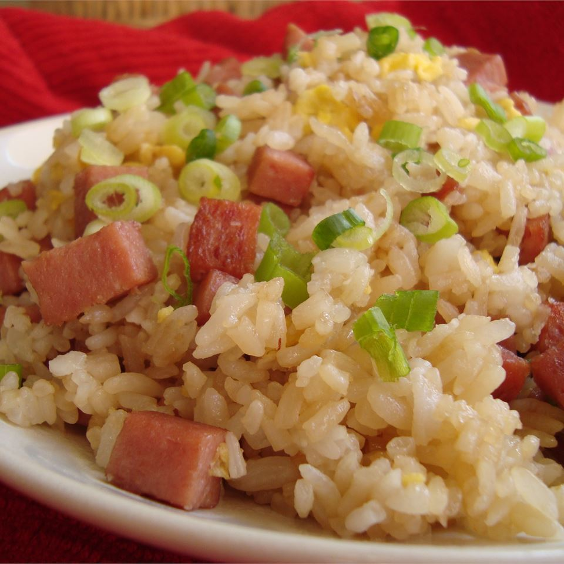

Fried Rice Recipe

Description
Fried rice is a dish of cooked rice that has been stir-fried in a wok or a
frying pan and is usually mixed with other ingredients such as eggs,
vegetables, seafood, or meat. It is often eaten by itself or as an
accompaniment to another dish. Fried rice is a popular component of East
Asian, Southeast Asian and certain South Asian cuisines, as well as a
staple national dish of Indonesia. As a homemade dish, fried rice is
typically made with ingredients left over from other dishes, leading to
countless variations. Fried rice first developed during the Sui Dynasty in
China and as such all fried rice dishes can trace their origins to Chinese
fried rice.
Ingredients
- 1 ½ cups uncooked jasmine rice
- 3 cups water
- 2 teaspoons canola oil
-
1 (12 ounce) can fully cooked luncheon meat (such as SPAM®), cubed
- ½ cup sliced Chinese sweet pork sausage (lup cheong)
- 3 eggs, beaten
- 2 tablespoons canola oil
- 1 (8 ounce) can pineapple chunks, drained
- ½ cup chopped green onion
- 3 tablespoons oyster sauce
- ½ teaspoon garlic powder
Steps
-
Bring the rice and water to a boil in a saucepan over high heat. Reduce
heat to medium-low, cover, and simmer until the rice is tender, and the
liquid has been absorbed, 20 to 25 minutes. Let the rice cool
completely.
-
Heat 2 teaspoons of oil in a skillet over medium heat, and brown the
luncheon meat and sausage. Set aside, and pour the beaten eggs into the
hot skillet. Scramble the eggs, and set aside.
-
Heat 2 tablespoons of oil in a large nonstick skillet over medium heat,
and stir in the rice. Toss the rice with the hot oil until heated
through and beginning to brown, about 2 minutes. Add the garlic powder,
toss the rice for 1 more minute to develop the garlic taste, and stir in
the luncheon meat, sausage, scrambled eggs, pineapple, and oyster sauce.
Cook and stir until the oyster sauce coats the rice and other
ingredients, 2 to 3 minutes, stir in the green onions, and serve.